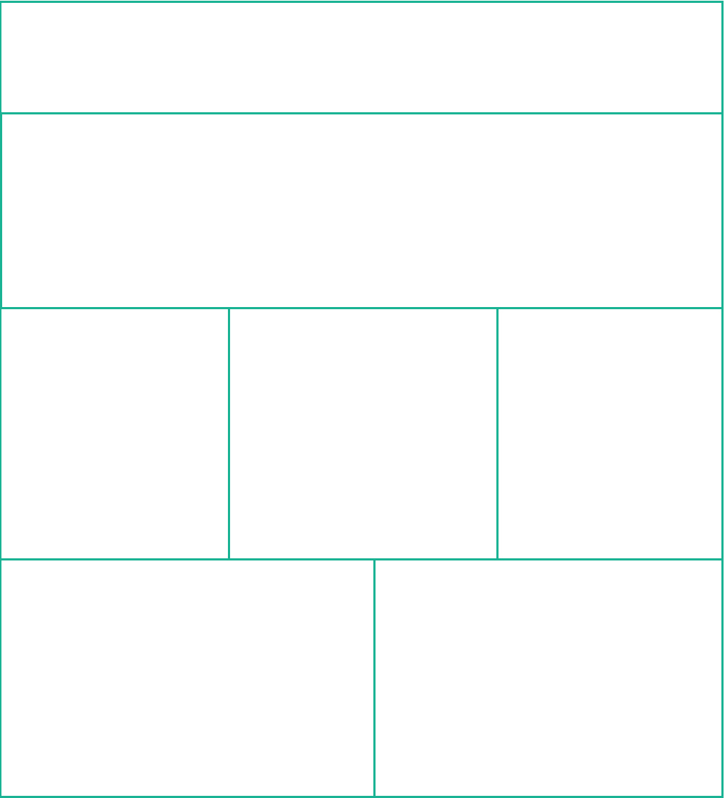

Lightning Talk Taking Design to Code
Before We Get Started Relationships Are Important.
Dev + Design =

Project Roadmap
- Plan
- Structure
- Hook it Up
Step 1: Plan
- Do we have what we need?
- Code vs. Images
- Functionality
Step 2: Structure
Choose Your Own Adventure
Bootstrap
Front End Framework with Recognizable Components
Examples

3: Hook It Up
Build The Grid Around Components, features, and groups of functionality.

SMACSS
Keep the big picture in focus.
What Did We Do?
- Planned.
- Structured.
- Built.
jbertling.github.io/lightning-talk